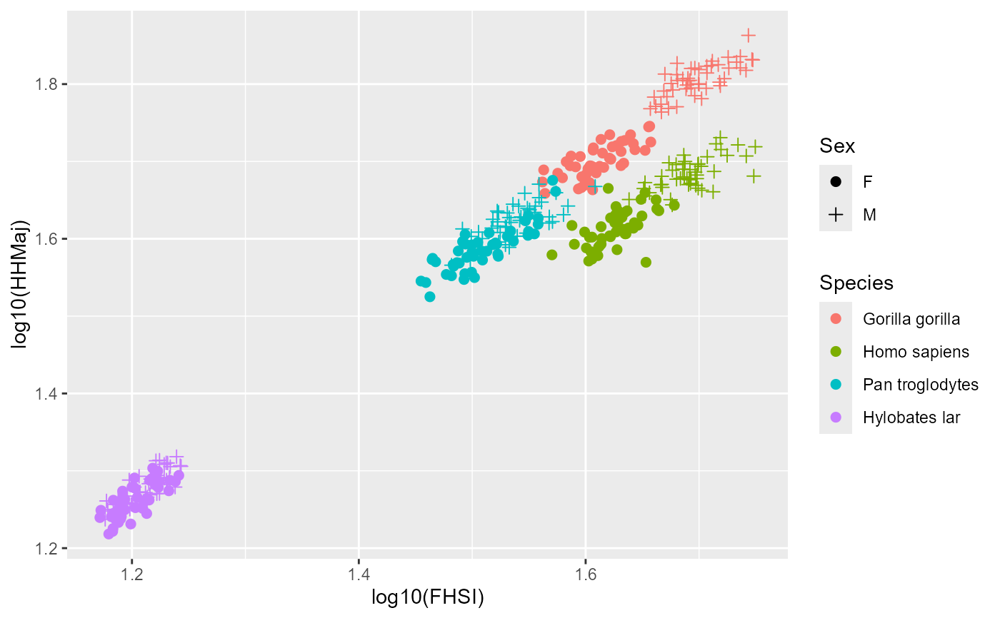

Long bone articular dimensions for four hominoid taxa
apelimbart.RdPostcranial metric data collected for western lowland gorillas, modern humans, common chimpanzees, and lar gibbons from Gordon (2025a).
Format
A data frame with 376 rows and 15 variables:
SpeciesfactorSpecies name, with four possible levels (in decreasing order of postcranial dimorphism:"Gorilla gorilla","Homo sapiens","Pan troglodytes", and"Hylobates lar")MuseumfactorCollection housing each specimenCollection.IDcharacterUnique specimen identifier within each collectionSexfactortwo possible levels:"F"and"M"Wildfactorfour possible levels:"Yes","Unknown","Died in captivity","No"Mass.kgnumericBody mass in kilograms when recorded in museum records. Collections often record weight in pounds, in which case data were converted to mass in kilograms.FHSInumericFemoral head superoinferior diameter: the maximum superoinferior diameter of the femoral head.TPMLnumericTibial plateau mediolateral width: the maximum mediolateral width of the articular surface of the tibial plateau.TPMAPnumericTibial plateau medial condyle anteroposterior length: the maximum anteroposterior length of the articular surface of the medial condyle of the tibial plateau.TPLAPnumericTibial plateau lateral condyle anteroposterior length: the maximum anteroposterior length of the articular surface of the lateral condyle of the tibial plateau.HHMajnumericHumeral head major axis diameter: treating the articular surface of the humeral head as a partial oblate spheroid, this is the length of the major axis passing through the oblate spheroid.HHMinnumericHumeral head minor axis diameter: the maximum width of the articular surface of the humeral head perpendicular to the major axis.RHMajnumericRadial head major axis diameter: treating the radial head in proximal view as an ellipse, this is the length of the major axis passing through the ellipse.RHMinnumericRadial head minor axis diameter: the maximum width of the radial head perpendicular to the major axis.RDAPnumericDistal radius anteroposterior width: the distance between the anterior and posterior extents of the boundary between the lunate and scaphoid facets of the distal articular surface of the radius.RDMLnumericDistal radius mediolateral breadth: the maximum width of the distal articular surface of the radius when the medial point of this dimension is constrained to the midpoint of the curve of the articulation with the distal ulna.
References
Gordon AD. (2025a) Interpreting statistical significance in hominin dimorphism: Power and Type I error rates for resampling tests of univariate and missing-data multivariate size dimorphism estimation methods in the fossil record. Journal of Human Evolution. 199:103630. (https://doi.org/10.1016/j.jhevol.2024.103630)
Examples
data(apelimbart)
ggplot2::ggplot(apelimbart, ggplot2::aes(x=log10(FHSI), y=log10(HHMaj),
color=Species, shape=Sex)) +
ggplot2::geom_point(size=2) +
ggplot2::scale_shape_manual(values = c(19,3))

ggplot2::ggplot(apelimbart, ggplot2::aes(x=log10(FHSI), y=log10(Mass.kg),
color=Species, shape=Sex)) +
ggplot2::geom_point(size=2) +
ggplot2::scale_shape_manual(values = c(19,3))
#> Warning: Removed 223 rows containing missing values or values outside the scale range
#> (`geom_point()`).